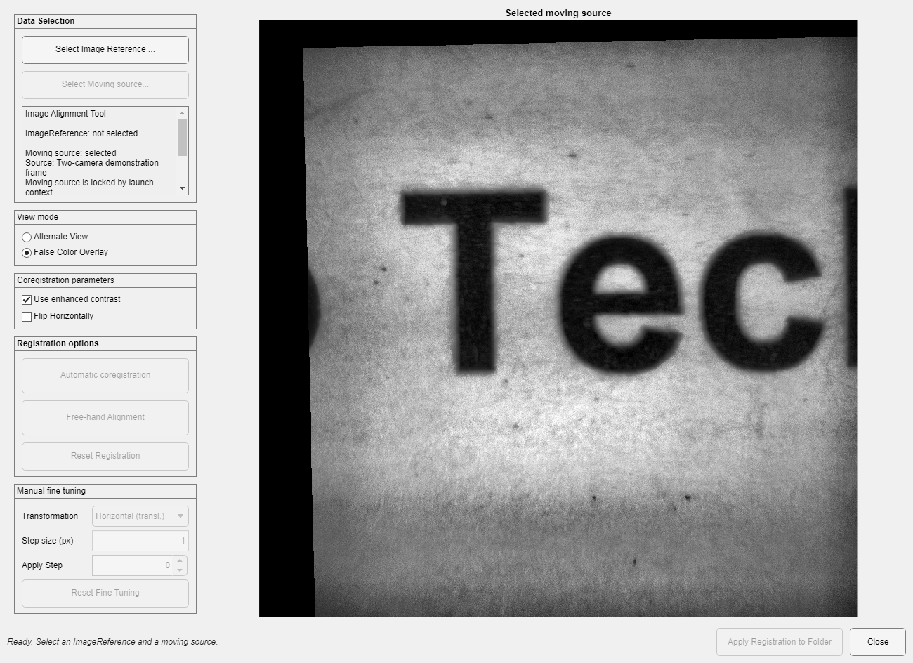
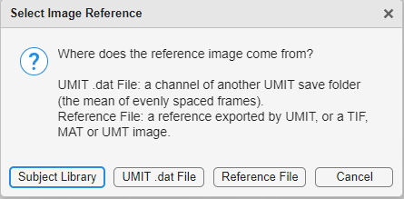
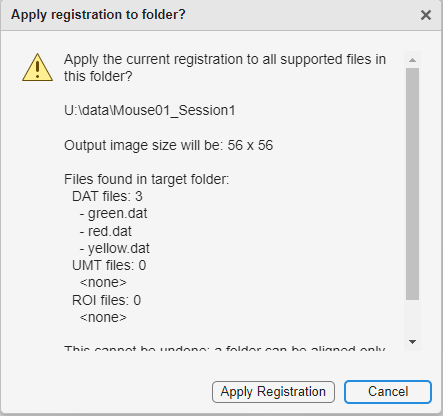
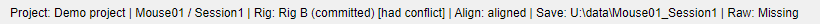

Image Alignment Tool estimates and reviews a 2-D transform from the current moving image to a reference image, then optionally applies that transform to the entire Save Folder. A project is not required.
Load .dat or image-kind .umt data and choose Utilities > Alignment Tool. DataViewer passes the current frame as a locked moving source, the source description and the target Save Folder, and, for a folder bound to a project, the project, subject and session.

Select Image Reference ... asks where the reference image comes from:

| Source | Use it when |
|---|---|
| Subject Library | The folder is bound to a project session: pick a reference of the subject's library (see Image Reference Manager). All sessions of the subject can share it. |
| UMIT .dat File | Another UMIT Save Folder holds the recording to align to: pick one of its .dat channels. The reference is the mean of up to 100 evenly spaced frames. That folder must hold a valid AcqInfos.mat, and it is only read. If it was itself aligned, the tool warns that its data are already transformed and that this folder would be interpolated a second time; you may continue. |
| Reference File | You have a reference file exported by UMIT (for example from the standalone Image Reference Manager) or a plain TIF, MAT or UMT image. |
The same image gives the same reference whatever the source, so several folders aligned to one .dat file or one reference file share the same reference. The chosen reference is recorded in the folder's DataParams.mat with where it came from.
| Control | Meaning |
|---|---|
| Select Image Reference ... | Chooses the reference (see above). |
| Select Moving source... | Chooses another supported image when launched standalone; locked when DataViewer supplied the source. |
| Alternate View / False Color Overlay | Changes comparison display only. |
| Use enhanced contrast / Flip Horizontally | Controls registration preparation and orientation. |
| Automatic coregistration | Optionally prepares the image with fliplr and adapthisteq (falling back to imadjust), configures multimodal registration with imregconfig, estimates a similarity transform with imregtform, and previews it with imref2d and imwarp. |
| Free-hand Alignment / Confirm | Adjusts a box interactively, then converts its geometry to a transform. |
| Transformation, Step size, Apply Step | Fine-tunes horizontal/vertical translation, rotation, or scale. |
| Reset Fine Tuning / Reset Registration | Resets the fine-tuning changes or resets all changes to the registration candidate. |
| Apply Registration to Folder | Applies the displayed geometric transformation to supported data in the Save Folder after an impact review and confirmation. See the warning and affected-file list below. |

A folder is aligned only once
Applying registration rewrites every .dat file in the target folder. Interpolation and out-of-frame loss cannot be undone, and no backup copy is made. After apply, the folder's alignment is committed: estimating or applying again is refused, with any reference. The only way to align the data differently is a fresh import of the raw data, which removes the alignment. Keep a copy of the Save Folder if you may need the unaligned data, review the impact summary and ROI warning, and confirm only once.
| Item | What happens |
|---|---|
| Every .dat | Every frame is warped to the reference image size (linear interpolation) and rewritten. |
| Image-kind .umt | Entries with supported spatial dimensions are warped. Non-image UMT files are skipped and reported; an image entry of another frame size stops the operation. |
| Current-format .roi | ROI vertices and masks are transformed and their geometric statistics recomputed. |
| DataParams.mat | The view, mask, reference, estimate, applied state and QC summary are updated. |
| AcqInfos.mat | Not changed: it describes the raw acquisition, and every aligned .dat file records its new size in its header. |
| Other files | events.mat, processing logs, non-image outputs, and unrelated files are not geometrically transformed. |
Every new file is first written next to the original; only when all of them are ready are the originals replaced. If any step fails, every original is restored and nothing is changed. A timestamped manualAlignmentReport_*.mat is written on success, and ImageAlignmentFailedReport_*.txt on failure.
The Save Folder keeps the only record of its alignment in DataParams.mat, under DataParams.registration: the reference image and where it came from, the estimated transform with its QC information, and whether, when and by whom it was applied. Nothing is stored in the project. DataViewer shows the state in its context line (Align: aligned or Align: not aligned; see Context line).

Before apply, the reference can be changed freely; the estimate must then be made again, because an estimate made against another reference is refused at apply. A folder aligned without a project can later offer its reference to a subject library (see Adding a folder's reference to the library).
Before application, compare the reference and moving images in Alternate View and False Color Overlay. After estimation, the QC metrics record translation in pixels, rotation in degrees, overall and X/Y scale, whether scale is uniform, whether shear is absent, and the transform determinant. The manual-adjustment record preserves fine-tuning choices.
These values describe the transform; they do not prove anatomical agreement. Inspect vessels, cortical borders, and out-of-frame regions visually before confirmation.
Reload ROIs after alignment
The impact dialog reports loaded ROI risk. After a successful apply, DataViewer reloads the most suitable current file, refreshes project information, and clears loaded ROIs because their coordinates may be stale. Save or export important ROI definitions before alignment and transform or recreate them afterward.
Closing with an unapplied candidate asks for confirmation (Close without applying / Cancel). Preview, view mode, and fine-tuning are temporary until apply.